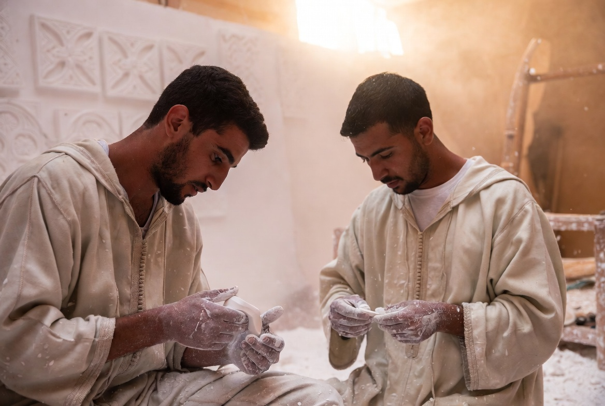
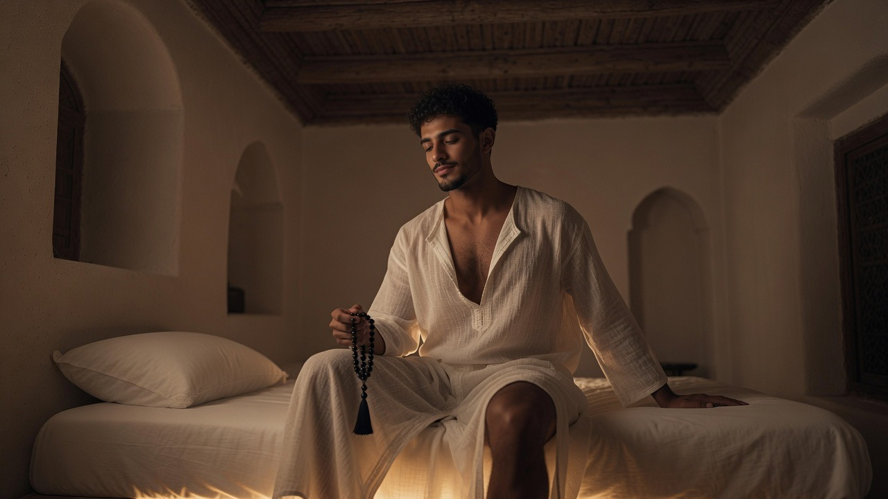
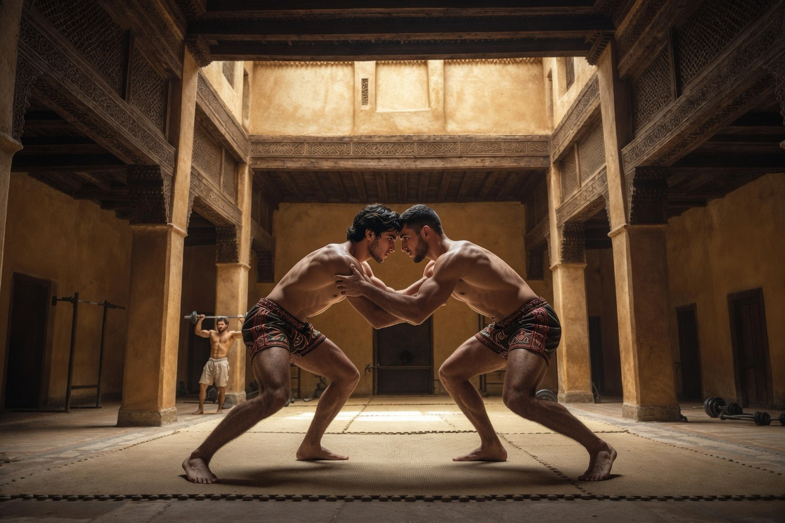
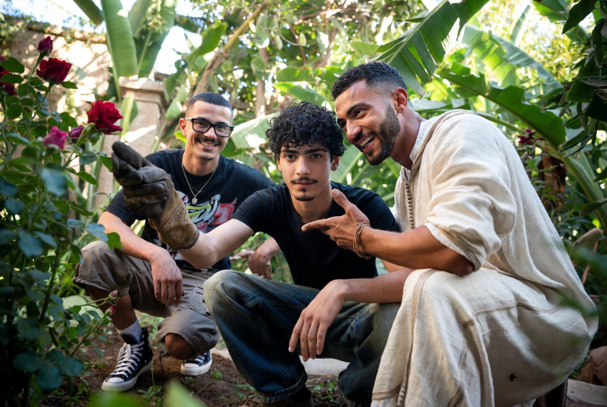

Architecture & Espaces
La maison comme ordre visible : matières, lumière, hébergements, espaces du corps, jardin.

L’architecture du Riad n’est pas un décor. Elle organise la vie : ombre et lumière, eau et silence, espaces partagés et espaces du retrait.
Zellige, bois, pierre, plâtre — les matières portent une mémoire. Chaque espace a une fonction dans le rythme de la maison.
Matériaux et langage

Zellige & stuc
Géométrie, lumière, surfaces qui respirent.

Tadelakt
Enduit à la chaux, poli à la pierre.

Bois & pierre
Matières nobles, présence durable.

CLIMAT
Fraîcheur naturelle
Bien avant la climatisation, l’architecture du riad savait rafraîchir sans consommer. Le principe est simple et éprouvé depuis des siècles : un patio ouvert au ciel, entouré de pièces hautes et de murs épais, crée un effet de cheminée.
Les grandes médersas mérinides de Fès — Bou Inania, al-ʿAṭṭārīn — appliquent ce principe à l’échelle monumentale.
Au Riad Al-Uns, cette logique ancienne reste la seule : aucune climatisation mécanique.
EAU
L’eau : usage et symbole
Dans le riad comme dans la médersa, l’eau n’est jamais décorative : elle rafraîchit l’air par évaporation, elle purifie avant la prière, et elle porte un sens religieux précis.
Au Riad Al-Uns, la fontaine du patio hérite de cette double fonction.

Hébergements

Camerettes
Chambres simples pour les résidents en formation.

Chambres & Suites
Hébergements de standing pour les hôtes sélectionnés.
Espaces du corps

Hammam

Sauna

Espace du corps
Jardin & potager

Le jardin n’est pas un décor : c’est un ordre vivant.
Découvrir le jardin →